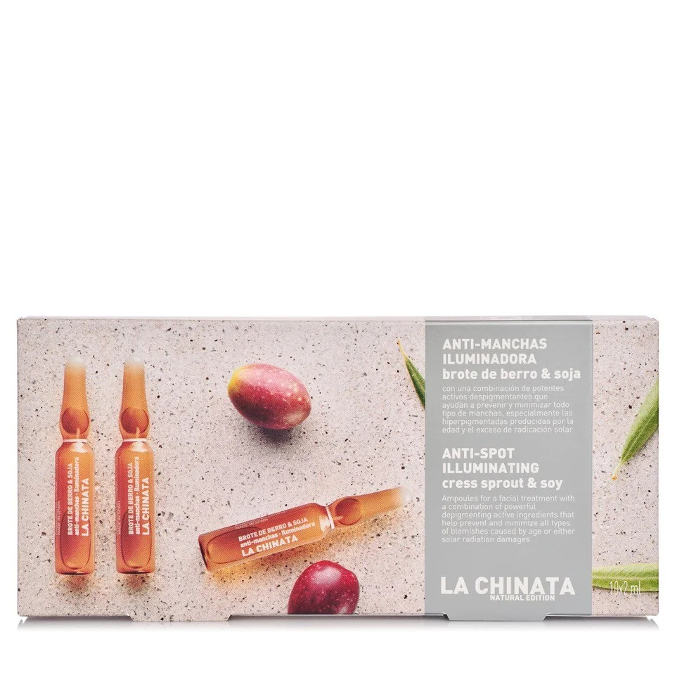

Cosmetic Made in Spain
聯繫我們
產品展示
AMPOLLAS ILUMINADORAS ANTIMANCHAS CON BROTE DE BERRO Y SOJA LA CHINATA

133.20 Kr Content: 10*2ml
Las ampollas iluminadoras antimanchas son la solución para ayudar a prevenir y minimizar todo tipo de manchas, especialmente las hiperpigmentadas provocadas por la edad y el exceso de radiación solar. Están formulados con brotes de berro y soja, además de una combinación de potentes activos despigmentantes que ayudan a prevenir y minimizar todo tipo de manchas, especialmente las hiperpigmentadas provocadas por la edad y el exceso de radiación solar. También contiene vitamina C estabilizada, que previene la oxidación de la piel, aporta luminosidad y unifica el tono del rostro; y también está presente el extracto de hoja de olivo, que actúa como antioxidante, antiirritante y antiinflamatorio.
Vida Copyright © 2024 All rights reserved